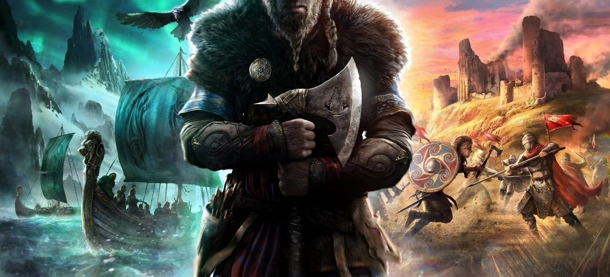
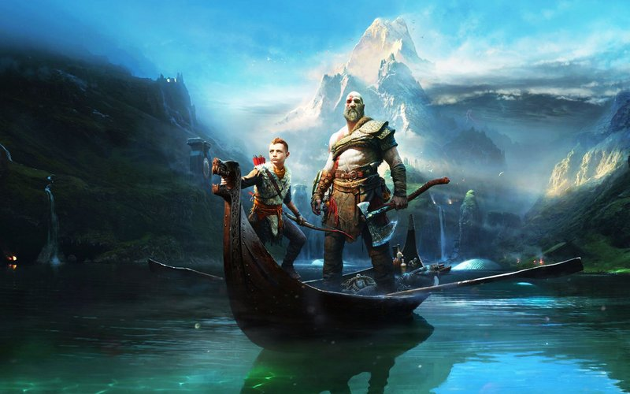
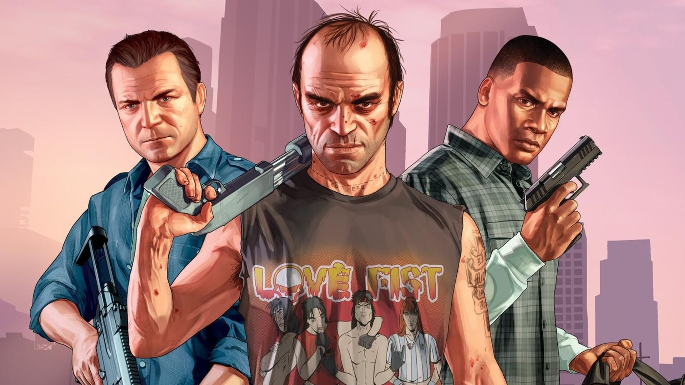

Mes Jeux Videos préférées
assassin's creed
Assassin's Creed est une série de jeux vidéo historique d'action-aventure et d'infiltration en monde ouvert, développée et éditée par Ubisoft. Le principe du jeu repose sur l'« Animus »1, une machine capable de lire la mémoire génétique d'un sujet, c'est-à-dire la mémoire de ses ancêtres. Ce concept permet d'explorer divers lieux et époques du passé. Le protagoniste des premiers volets de la série est Desmond Miles, un jeune Américain ayant des ancêtres faisant partie de l'ordre des Assassins, une secte orientale séculaire2. On découvre ainsi dans Assassin's Creed, le premier jeu de la série sorti en 2007, Altaïr Ibn La-Ahad, un maître Assassin qui vivait en Terre sainte durant la Troisième croisade, puis divers personnages ayant vécu à différentes périodes historiques3. La confrérie des Assassins est dans la série en constant conflit avec les Templiers qui n'ont également cessé d'exister dans le jeu, même après leur dissolution officielle. Le dernier épisode en date, Assassin's Creed Valhalla, se déroule pendant l'ère viking et est sorti en 2020.
God of War
L'histoire de God of War se déroule au départ dans l'univers de la mythologie grecque et raconte l'histoire d'un simple mortel élevé au rang de dieu. Né à Sparte, Kratos est un chef guerrier, aussi bien respecté que redouté, possédant une force étrangement inhumaine. Un jour, acculé devant l’invasion d'une armée barbare lors d'une bataille sanglante, il pactise par désespoir avec Arès, Dieu de la guerre, en échange de sa totale allégeance à celui-ci. Il obtient ainsi une grande puissance, ce qui lui permet de vaincre facilement son ennemi et de devenir invincible, enchainant les victoires lors de toutes les guerres qu'il entame par la suite, sous les ordres de son bienfaiteur. Malheureusement, ayant perdu son âme, il saccage une ville tombée sous son armée et massacre tous les habitants dont sa femme et sa fille, qu'il tue de ses mains sans en avoir conscience. En échange du pardon pour ses crimes, et espérant qu'on lui efface ses souvenirs qui le hantent, il offre sa puissance et ses armes aux dieux, résolvant les conflits dans lesquels le Panthéon ne peut pas intervenir directement, devenant le fantôme de Sparte. C'est ainsi que les dieux l'aident à éliminer Arès devenu tyrannique.
GTO
Grand Theft Auto, souvent abrégé GTA, est une série de jeux vidéo créée par David Jones et Mike Dailly3, puis par les frères Dan et Sam Houser, Leslie Benzies et Aaron Garbut. Apparue en 1997, la série est principalement développée par l'entreprise écossaise Rockstar North (anciennement DMA Design), et éditée par Rockstar Games. Le nom de la série est dérivé de l'expression grand theft auto, qui signifie « vol de voiture » et qui est parfois utilisée dans le jargon policier.